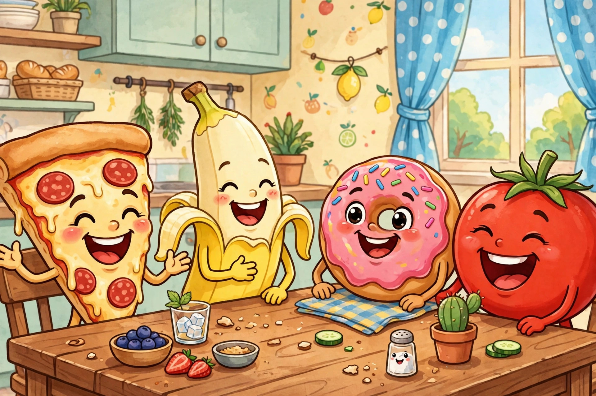

Food Jokes for Kids Ages 9–12

Food jokes have one huge advantage over every other joke category: the props are already on the table. The biggest food-joke collections online run to 90 jokes or more in a single list, and one giant all-purpose collection packs 300 jokes into 12 categories — but almost all of them are flat lists written for every age at once, with no help on which joke to tell, when to tell it, or how to land it without getting shushed at dinner. This collection fixes that. The jokes below are picked for ages 9–12, sorted by course, and followed by a mealtime decision guide, a step-by-step delivery procedure, two table games, and a workshop for inventing food puns of your own. A quick age note before the feast: younger kids laugh hardest at the fruit and veggie jokes, because the pictures are easy to imagine, while the lunchbox and dessert jokes use trickier wordplay that lands best from about age nine up. Nobody is too old for the soup joke, though. The soup joke is eternal.
Fruit and veggie jokes (the starters)
Every good meal — and every good joke set — starts light. Fruit and vegetable jokes are the easiest to remember because each one builds a little picture: a blushing tomato, a racing carrot, a potato with a comedy career. Tell two or three of these while everyone is still sitting down and settling in, and save the bigger wordplay for later in the meal.
- Why did the banana slip out of the fruit bowl? It was tired of just hanging around in a bunch.
- What did the apple say to the pie? You have a lot of crust showing up like that.
- Why did the orange stop in the middle of the road? It ran out of juice.
- What do you call a sad strawberry? A blueberry feeling berry blue.
- Why do bananas put on sunscreen? So they do not peel.
- What did one grape say to the other at bedtime? Stop wine-ing and go to sleep.
- Why was the watermelon so good at keeping secrets? It never spilled its seeds.
- What room can nobody enter? A mushroom — there is not mushroom inside.
- Why did the tomato turn red? It saw the salad dressing.
- What do you call a potato that tells jokes? A spud-up comedian.
- Why did the carrot win the race? It was rooted in first place the whole way.
- What did the lettuce say to the celery? Quit stalking me around the salad bowl.
- Why do pickles never win arguments? They always end up in a brine-y mood.
- What is a vampire's least favorite vegetable? A steak through the heart — garlic bread runs a close second.
Main-dish and lunchbox jokes
These are the heavy lifters: pizza, sandwiches, tacos, and the legendary homework-eating defense. Lunchbox jokes earn their name because they work best in the middle of the day, traded across a cafeteria table like trading cards. One joke buys one joke — that is the unwritten cafeteria exchange rate, and a kid holding twelve of these is cafeteria rich.
- How do you fix a broken pizza? With plenty of tomato paste and a little patience.
- What did the hamburger name its daughter? Patty, of course.
- Why did the student eat his homework? His teacher said it would be a piece of cake.
- What do you call a noodle that pretends to be another noodle? An im-pasta.
- Why did the sandwich go to the dentist? It was losing its filling.
- What did the macaroni say to the cheese? It is grate working with you.
- Why do tacos never gossip? They do not want to spill the beans.
- What did the plate say to the fork at lunch? Dinner is on me, so relax.
- Why was the soup so expensive? It had twenty-four carrots in it.
- What do you call a hot dog that wins every race? A real wiener.
- Why did the bread go to the doctor? It was feeling crumb-y and a little toast-y.
- What did the mayonnaise say when the fridge door opened? Close the door — I am dressing.
Snack and dessert jokes
Dessert jokes finish the set, and they should be told like dessert is served: a little later, a little slower, and only after the main course has done its job. Notice how many of these turn on food words doing double duty — filling, crumb-y, twist, dressing. That double meaning is the engine of almost every food joke ever told, and it is exactly what the workshop at the end of this page teaches you to build.
- Why did the cookie visit the doctor? It was feeling crumb-y all week.
- What do you call cheese that does not belong to you? Nacho cheese — hands off.
- Why did the ice cream break up with the cone? It needed some space to chill.
- What is a pretzel's favorite dance? The twist, performed very carefully.
- Why did the donut go to the dentist? It needed a filling, urgently.
- What do you call a sleeping pizza slice? A pi-zz-a taking a well-earned nap.
- Why do muffins make terrible secret agents? They crumble under the slightest pressure.
- What did the chocolate chip say to the cookie dough? We are really in this together now.
- Why did the popcorn bag blush? It heard the movie was a real thriller.
- What is a cupcake's favorite day? Frosting Friday, followed closely by Sprinkle Saturday.
- Why did the jelly roll down the hill? To join the jam session at the bottom.
- What do you call a cake that tells jokes at bedtime? A real crumb-back comedian of the night.
Which food joke for which moment
Timing beats talent. The same joke that gets a roar at lunch can get a polite smile at a formal family dinner, so pick with a plan:
- Family dinner, grandparents present → fruit and veggie starters. The pictures are clear, the wordplay is gentle, and nobody has to explain anything.
- Cafeteria trading session → main-dish jokes, told in rounds. Keep two in reserve — the kid who runs out of jokes first refills everyone's water.
- A friend feeling down → one dessert joke, told one-to-one, not performed for a crowd. A joke aimed at one person cheers; a joke performed at them can embarrass.
- The meal is dragging and adults are talking → wait. A joke told over adult conversation dies. Store it, and spend it when the table goes quiet.
- Cooking with family → the soup and carrots joke, delivered while actually stirring something. Props double the laugh.
How to deliver a food joke at the table
Table jokes fail for one predictable reason: the teller rushes because people are chewing. Use this five-step procedure instead:
- Win the moment first. Wait for a natural pause — plates being passed, a refill being poured. Never start mid-sentence over someone else.
- Ask the question like a real question. Say it plainly and look at one person. A joke question asked to the whole room gets answered by nobody.
- Count two silent seconds. Let people actually guess. Half the laugh is the guessing, and a guessed-wrong answer makes the real punchline funnier.
- Deliver the punchline flat and short. No laughing at your own joke before the end, no speeding up on the last three words.
- Stop after one. A single landed joke makes you funny. Four in a row makes you a performance nobody ordered. Bank the rest for the next meal.
What success looks like: someone at the table repeats your punchline to someone who missed it — or groans and immediately asks if you know any more. A groan followed by a request is the highest grade a food joke can earn.
Food joke styles compared
| Style | Memory load | Best moment | Watch out for |
|---|---|---|---|
| Picture jokes (fruit & veggie) | Low | Start of any meal | Very young audiences only — older kids want wordplay |
| Wordplay jokes (lunchbox) | Medium | Cafeteria trades | The pun must be heard clearly; noisy rooms kill them |
| Dessert one-liners | Low | End of a meal, one-to-one | Telling them too early spoils the finish |
Make your own food pun
Almost every joke on this page was built the same way, and the recipe has three steps. First, pick a food word with a second life: jam, roll, dressing, filling, grate, toast, spill, chill. Second, find the everyday phrase hiding inside it — traffic jam, drum roll, salad dressing, losing your filling. Third, build a tiny scene where the food word is literal: a strawberry stuck in traffic is in a jam, a sandwich at the dentist is losing its filling. Test the result on one honest friend. If the friend can explain why it is funny without you helping, the joke is finished. If you have to explain it, swap the food word and rebuild — the formula works, the ingredient was wrong.
Two joke games for the table
The Menu Challenge. Someone reads real items off a menu or a fridge list — soup, pickles, leftovers — and each player gets thirty seconds to turn one item into a joke using the workshop formula. The table votes with groans; the biggest groan wins the round. The Grocery Run. The first player names a food and a joke about it. The next player must name a food starting with the last letter of the previous food and joke about that one. Apple to egg to grape to eggplant — the chain breaks, the chain-breaker washes a dish or tells the soup joke as a forfeit. Both games work because they turn joke-telling from a performance into a group project, which is where the best food jokes have always come from: a table full of people, talking over each other, trying to top the last punchline before the plates are cleared.
Still hungry for more? The knock-knock collection hides a whole run of food jokes in disguise — lettuce, olive, and one very patient banana.